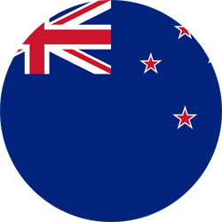

New Zealand
By Peadar McHenry
New Zealand is an island country located in the south-western Pacific Ocean. It consists of two islands. It is a country filled with rich culture which mainly comes from the ethnic group called Māori.